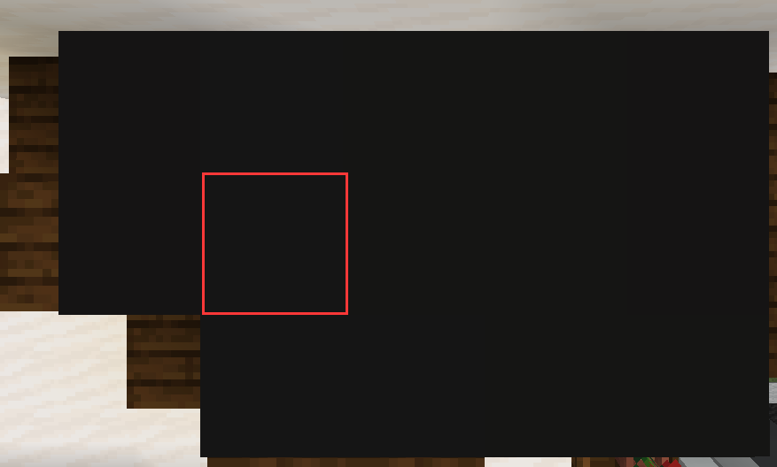
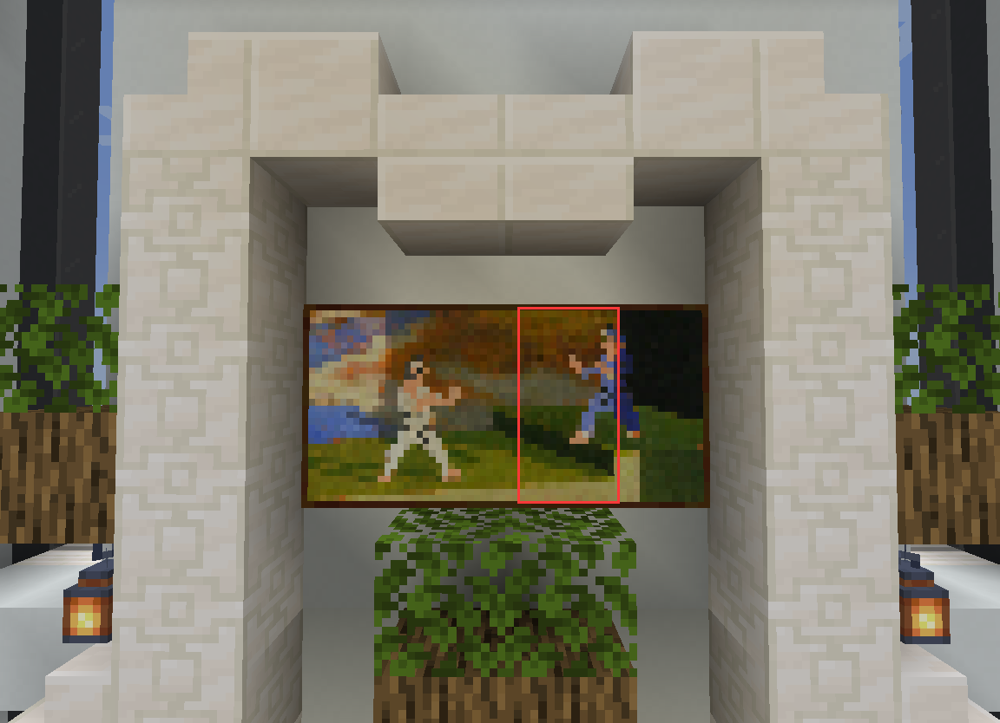

by xtsdcb69
各部分目录
游戏全程
MilK的家
PARTID 01 | 出现结局: ALL | 先决条件: 无
你 (MilK) 将会在家中的黄色床上出生。下到一楼，离开房间，经过10.8秒的动画后，游戏将正式开始。
零时差报社打卡
PARTID 02 | 出现结局: ALL | 先决条件: 无
* 此为可选部分。
出门右转再左转，走到尽头后左转进入零时差报社，随后再左转即可看到打卡机。按下按钮后，将会触发对话:
-- 打卡成功! --
时间: 2020.4.29 07:59:59.999
今日早到 0 分钟 0.001 秒!
<MilK> 厚沥血差点迟到
加油, 打工人 MilK ! 还有, CEO 泷喵在办公室等你。
<MilK> az, 一开始就见老板这么刺激的吗pwp, 谁设计的 (可能这就是新人待遇(?))
磁石指针
PARTID 03 | 出现结局: ALL | 先决条件: 完成 02
* 此为可选部分。
完成 02 后，二楼的公告板右边将会出现一个箱子，箱子内有一个磁石指针。这个磁石指针指向三楼CEO办公室内的书架。
泷喵的新任务
PARTID 04 | 出现结局: ALL | 先决条件: 无
与泷喵对话，将会收到两个新任务。
办公室里的书架
PARTID 05 | 出现结局: ALL | 先决条件: 无
泷喵的办公室的左边有一个书架，可以通过北边的活版门跳上去。
跳上去后，可以通过图中框出来的地方穿过顶面的黑色区域。
进入书架内部后，可以看到磁石，以及写有一个"QY PROJECT"的告示牌和下面的按钮。
点击按钮后，三楼楼梯处的画中的暗道将会打开。
把报告交给志郎
PARTID 06 | 出现结局: ALL | 先决条件: 完成 04
* 此为可选部分。
修理饮水机
PARTID 07 | 出现结局: ALL | 先决条件: 完成 04
* 此为可选部分。
前往村庄
PARTID 08 | 出现结局: ALL | 先决条件: 完成 04
完成 04 后，三楼楼梯处的画中的暗道将会打开。进入暗道，前往村庄。真正的故事开始展开。